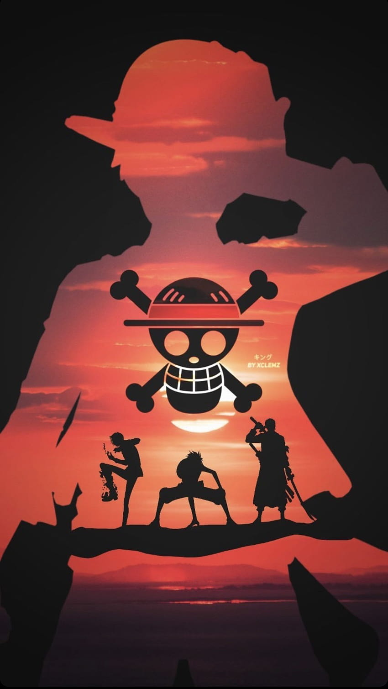

Chega ao fim a ardua batalha contra o poderoso Kaido e a Big Mom, dois dos antigos yonkous,
os chapeus de palha saem vitoriosos e tomam em sua guarda o país de wano.
Luffy agora como um dos 4 yonkous, compete pelo One piece com Barba negra, Shanks e Com o infame Buggy, o palhaço.
Que formou a Cross Guild, Uma organização voltada contra a marinha que conta com dois antigos shimbukais,
Crocodile, o grande pirata que tentou dar um golpe politico na ilha de Alabasta e Miwhalk, O maior espadachim do mundo.
Após ser tomada pela organização criminosa de espiritos amaldiçoados, Shibuya se encontra em estado de caós,
Uma batalha entre espiritos amaldiçoados e feiticeiros Jujutsu foi travada em meio aos humanos que foram usados como refem.
Como os humanos muitos feiticeiros foram mortos e sequestrados, dentre eles o mais poderoso que mantinha a ordem no mundo.
Satoro Gojou apos ser selado em um feitiço feito pelo espirito amaldiçoado se encontra em posse do Suguro Geto, o lider da organização criminosa.
Dentre os desastres o espirito amaldiçoado conhecido como Ryoumen Sukuna que acabou entrando em conflico com outro espirito amaldiçoado e tambem um general divino.
Nesse conflito muitas vidas foram ceifadas e uma grande parcela de shibuya foi destruida.

Sun jinwhoo, um caçador de rank baixo, conhecido como o caçador mais fraco de todos os tempos, tem uma grande mudança na sua vida
quando uma missão de rank baixo dá errado e ele vê boa parte da sua equipe morrer.
Ao servir de sacrificio ele tem a oportunidade de viver novamente ao aceitar uma missão secreta nessa dungeon.
jinwhoo agora tem que treinar firmemente para que não seja punido e consiga evoluir seu novo poder.